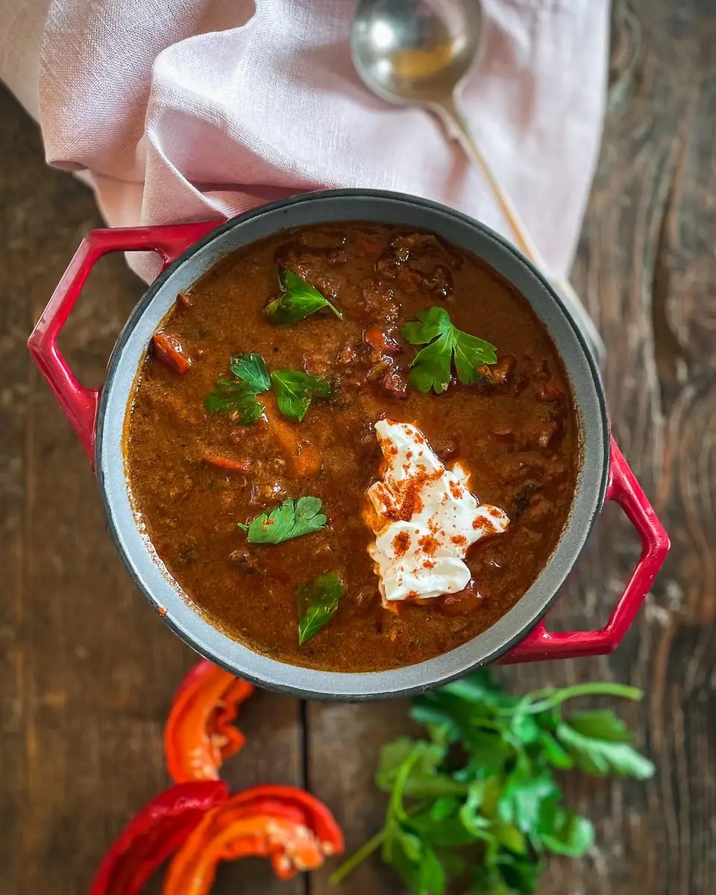

[ HOME ]
Wild Boar

Ingredients:
- 1 kilo wild boar stewing meat cut in 5-6cm pieces
- 2 large onions – roughly chopped
- 2 carrots – sliced into rings
- 1 large celery branch including the leaves – roughly chopped
- 600 g potatoes – cut into large cubes you can swap some of the potatoes for turnips or parsnips
- 1 large sweet red pepper – seeded and cut into large strips
- 3 tbsp sweet paprika
- 1 tsp hot paprika
- 1 tsp caraway seeds
- 1 tsp oregano
- 1 bay leaf
- 1 tbsp tomato paste
- 1 tin cherry tomatoes or plum tomatoes
- olive oil
- salt and freshly ground pepper
- 2-3 tbsp soured cream
- 1 tsp smoked paprika or sweet paprika
- 2-3 stalks parsley
Marinade
- 1 bottle red wine
- 1 tsp black peppercorns
- 1 tsp all spice berries
- 2 tbsp red wine vinegar
- 2 bay leaves
Steps:
Marinade
- Add the wild boar and marinade spices to a large non-metallic bowl. Add the wine until it covers the meat. Add the wine vinegar and cover. Leave in the fridge overnight or for up to 24 hours.
Goulash
- Drain the meat reserving the wine but discarding the spices. Dab the meat dry and brown in olive oil in the casserole dish. Add the onions, carrots, celery and red pepper. Cook for a further 3-4 minutes until the onions are translucent. Add the herbs and remaining spices. Toss over to cover the meat in the spices and add half the wine marinade.
- Bring to a boil and then simmer on very low heat. After thirty minutes, add a tablespoon of tomato paste, the tinned tomatoes, and a little more marinade.
- Meanwhile, chop the potatoes and add them after the first hour of cooking. Simmer gently adding more marinade until the meat and potatoes are soft. Each time you add the marinade – bring the stew back to a boil for a couple of minutes and then turn it down to a slow simmer. This version has lots of sauce – more like the traditional goulash soup. It is up to you how soupy or stewy you want it to be.
- Depending on the meat – it may need 2 – 3 hours to cook*. Adjust the cooking times if you swap the wild boar for other meats.
- Garnish with soured cream and smoked paprika. Serve with a big green salad, sauerkraut or cabbage salad and plenty of bread to mop up the sauce.